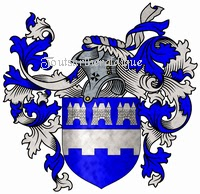
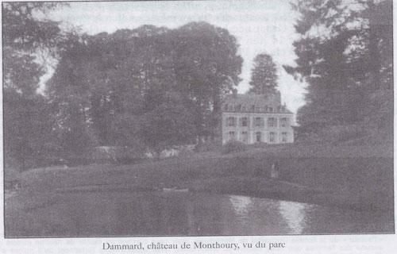
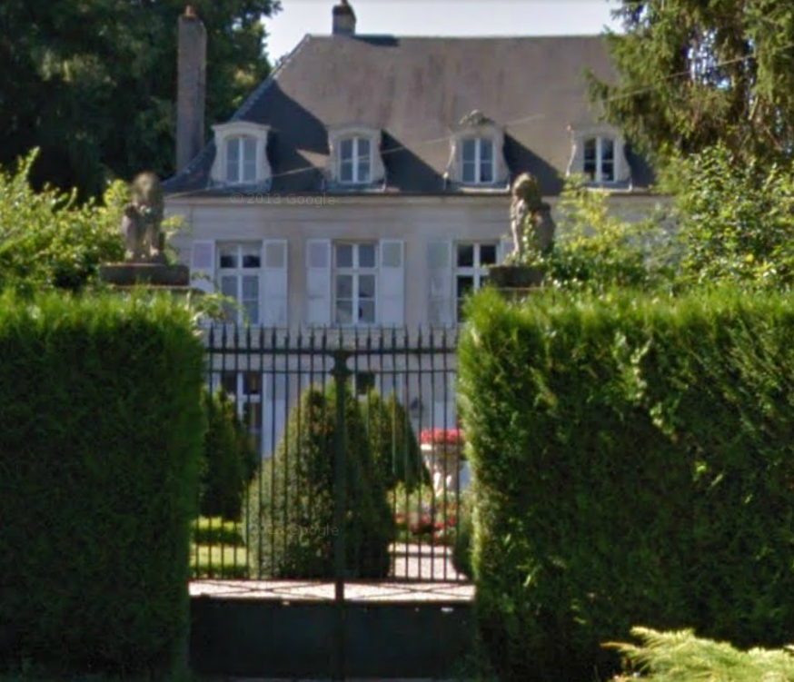
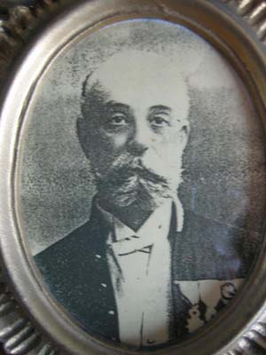
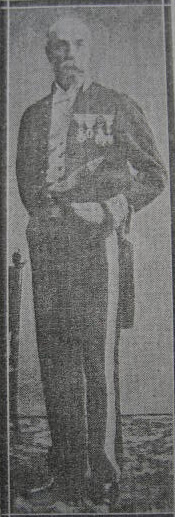
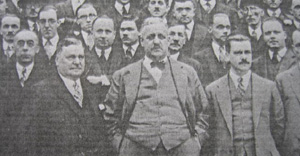
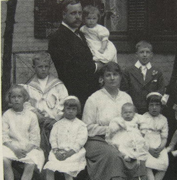
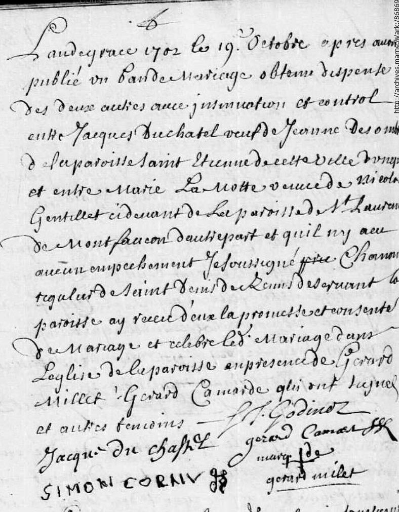

Du Moyen Âge à Louis XVI

Le patronyme Du Chastel se retrace jusqu'au Moyen Âge. En Bretagne, la branche des Du Chastel de Trémazan occupe une place considérable dans la chevalerie, notamment à la bataille d'Azincourt, au moment de la guerre de Cent Ans. D'autres branches, tels les Du Chastel de La Martinière, se répandent dans le nord et l'est de la France, particulièrement en Champagne — c'est le cas de la descendance de Jacques Duchastel étudiée ici.
C'est avec un arrière-petit-fils de ce Jacques Duchastel, Jean-Baptiste Duchastel de Montflambert (1723–1809), résidant à Reims, que s'ouvre la lignée baronniale. Écuyer et conseiller du roi à la Maison de France, sa charge de secrétaire du roi lui vaut d'être anobli sous Louis XVI, par lettres patentes émises en 1775 lors du sacre du roi.
La famille survit à la Révolution et acquiert, sous l'Empire, un nouveau titre baronnial héréditaire. Dans la France du XIXe siècle, alors que royalistes, révolutionnaires et bonapartistes se détestent mutuellement, les Duchastel de Montrouge prospèrent et tirent habilement leur épingle du jeu au fil des changements de régime.


À l'époque du premier Empire (1804–1814), l'accession à la noblesse est réservée à certains fonctionnaires impériaux : Napoléon Ier accorde le droit aux titres viagers de comte ou de baron selon l'importance des fonctions exercées — l'« anoblissement par charge ». On évalue à 1 519 le nombre de personnes anoblies ainsi en six ans. Les titres et majorats se transmettent de mâle en mâle, par droit d'aînesse.
Riche négociant de Troyes, propriétaire de la forêt d'Aumont (5 500 arpents), député de l'Aube au Conseil des Cinq-Cents puis au corps législatif — Jacques-Jean-Baptiste Duchastel-Berthelin sera fait baron d'Empire à titre héréditaire par décret impérial promulgué au Palais des Tuileries le 2 janvier 1814. Mémoires SGCF, vol. 56, n° 4, cahier 246 — p. 293
De baron en baron, jusqu'à Montréal
Le titre passe de main en main au gré des naissances, des morts prématurées et d'un exil vers le Nouveau Monde. Voici les onze porteurs successifs du nom, de Reims à Outremont.
Jacques Du Chastel
Jean-Baptiste Du Chastel
Jacques Du Chastel
Jean-Baptiste Duchastel
Jacques-Gabriel Duchastel de Montrouge
Alexandre-Louis-François Duchastel
Jules-Jean-Baptiste Duchastel
Léon-Hilaire-Alexandre Duchastel


Jules-Alexandre Duchastel


Léon-Alexandre Duchastel
Yves-Jules Duchastel
Dix générations, branche par branche
Chaque entrée peut être dépliée pour consulter la descendance complète telle que reconstituée dans l'article original.
Gén. 1Jacques Du Chastel & Jeanne Desombres›
Jeanne Desombres, née en 1627, décédée à Reims (paroisse Saint-Étienne) le 15 janvier 1702, âgée d'environ 75 ans. Le couple se serait uni au milieu du XVIIe siècle, probablement à Reims.
Veuf, Jacques Du Chastel se remarie le 19 octobre 1702, en la paroisse Saint-Denis de Reims, avec Marie Lamotte, originaire de Montfaucon (Saint-Laurent, Aisne) et veuve de Nicolas Gentillet. Marie Lamotte décède le 1er janvier 1717 à l'Hôtel-Dieu de Reims.

Gén. 2Jean-Baptiste Du Chastel & Marguerite Plantin›
Né en 1670, probablement à Reims, décédé à Reims le 12 mai 1702. Marié avec Marguerite Plantin (fille de Pierre Plantin et Nicole Vincent, mariés en 1665), décédée le 8 juillet 1754 à Reims. Mariage calculé entre 1690 et 1696.
Gén. 3Jacques Du Chastel & Marie-Jeanne Miteau›
Né le 17 octobre 1700, probablement à Reims; décédé le 29 octobre 1740. Marié le 10 février 1722 à Reims avec Marie-Jeanne Miteau (1703–1751), fille de Jean Miteau et Jeanne Huart.
Gén. 4Jean-Baptiste Duchastel, premier baron de Montflambert›
Anobli par Louis XVI. Né le 18 mars 1723 à Reims; décédé au même endroit le 2 février 1809. Marié à Louise-Nicolle Cadot (1736–1776), fille de Jacques-François-Thomas Cadot et Reine-Anne Gard.
Gén. 5Jacques-Gabriel Duchastel de Montrouge & Philippine-Élisabeth Durand de Courmont›
Né le 14 avril 1758 à Reims; décédé dans cette ville le 25 mars 1792, en pleine Révolution. Militaire, lieutenant au régiment colonel de Dragons (1778). Marié à Rethel le 9 janvier 1781.
Gén. 6Alexandre-Louis-François Duchastel, baron de Montrouge›
Né à Rethel le 30 juin 1784. Marié le 19 mai 1813 à Reims avec Sophie Le Goix. Orphelin de père à 8 ans, il hérite du titre au décès de son oncle Jacques-Jean-Baptiste Duchastel-Berthelin (1830). D'abord établi à Reims, le couple s'installe à Paris en 1823.
Gén. 7Jules-Jean-Baptiste Duchastel, baron de Montrouge›
Né à Reims le 19 juillet 1823; décédé à Paris le 4 janvier 1889. Diplomate et homme d'affaires, il partage sa vie entre Paris et le château familial de Monthoury à Dammard (Aisne).
1er mariage — 19 mai 1845 à New York, avec Julie-Sylvia-Félicie Pèlerin.
2e mariage — avec Berthe Follias.
Gén. 8Léon-Hilaire-Alexandre Duchastel, baron de Montrouge›
Né à Paris le 17 avril 1848; décédé à Paris le 27 avril 1929. Diplomate formé au ministère des Affaires étrangères (1871–1873); en poste successivement à New York, Charleston, Chicago, Québec (1881), Amsterdam, vice-consul puis chargé de la chancellerie de Montréal (1894), consul de France à Vancouver (1906). Chevalier de la Légion d'honneur (1902). Retiré de la vie publique en 1908 après un séjour à Montréal. Marié à New York en 1877 avec Anita Snyder.
Gén. 9Jules-Alexandre Duchastel, baron de Montrouge›
Né le 1er septembre 1878 à New York; décédé le 20 février 1938 à Montréal. Diplômé de l'École Polytechnique de Montréal (1901); ingénieur administrateur à la Ville d'Outremont (1906–1924), contribuant notamment au tracement des rues et à l'implantation des parcs; major dans l'armée canadienne durant la Première Guerre mondiale. Marié en 1904 à Jeanne Lacoste. Inhumé avec son épouse au cimetière Notre-Dame-des-Neiges.
Gén. 10Léon-Alexandre Duchastel, baron de Montrouge›
Né le 22 juillet 1905 à Outremont; décédé le 21 mars 1962. Ingénieur civil, diplômé de l'École Polytechnique de Montréal (1927); major, régiment de Maisonneuve. Marié le 29 avril 1933 à Outremont avec Yvette Beauchamp.
Gén. 11Yves-Jules Duchastel, présent baron de Montrouge›
Né le 7 avril 1934 à Montréal. Neurologue; fondateur en 1964 et chef du Service de neurologie de l'Hôpital du Sacré-Cœur de Montréal jusqu'en 1980; président de l'Association des neurologues du Québec (1975–1976). Marié le 21 décembre 1957 à Michèle Lalonde, écrivaine, poète et professeure; divorcé en 1990; actuellement conjoint de Louise L'Espérance.
De Paule Duchastel à la famille Sébastien
Le titre baronnial suit Léon-Alexandre puis Yves-Jules Duchastel de Montrouge (générations 10 et 11 ci-dessus). Mais une sœur de Léon-Alexandre, Paule Duchastel de Montrouge (9.6, fille de Jules-Alexandre et Jeanne Lacoste), fonde à Outremont une descendance tout aussi bien documentée, par les familles Charest puis Sébastien.
Gén. 9.6Paule Duchastel de Montrouge & Clément Charest›
Née le 6 juillet 1914 à Outremont; décédée le 15 décembre 1989 à Ville-Mont-Royal. Épouse Clément Charest (né le 19 octobre 1912) le 22 avril 1936.
Gén. 10Renée Charest & Pierre Sébastien›
Née le 31 octobre 1941, fille de Clément Charest et Paule Duchastel de Montrouge. Épouse Pierre Sébastien (né le 5 septembre 1936) le 26 mai 1962.
Gén. 11Philippe Sébastien›
Né en 1965, fils de Pierre Sébastien et Renée Charest.
Sources
- Jean-Yves Bronze, avec la collaboration du Dr Yves Duchastel — « Des barons d'Empire au Québec : les Duchastel de Montrouge », Mémoires de la Société généalogique canadienne-française, vol. 56, n° 4, cahier 246, hiver 2005, p. 289–304.
- Chaix d'Est-Ange, Gustave. Dictionnaire des familles françaises anciennes ou notables à la fin du XIXe siècle, Paris, Éditions Vendôme, 1983, t. V.
- Tulard, Jean (dir.), « Noblesse d'Empire », dans L'ordre de la noblesse, vol. I, Paris, Jean de Bonnot, 1978.
- Audet, Francis J., « Les représentants de la France au Canada », Cahiers des Dix, vol. 4, 1939.